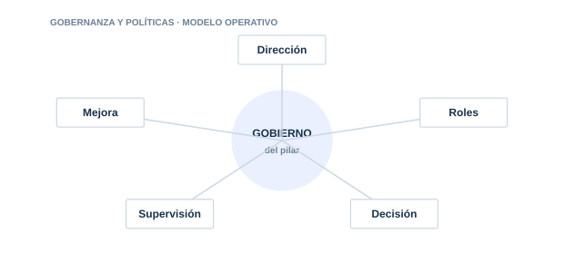

01 · PILAR
Gobernanza y políticas
Establecer cómo decide, supervisa y mejora la organización el uso de la IA.

Directorio del pilar5 guías · acceso directo
01.0101.0201.0301.0401.05
Gobierno del SGIA
Diseña el sistema de gestión que conecta estrategia. riesgos. controles y mejora continua.
Roles y responsabilidades
Define quién propone. aprueba. opera. supervisa y retira cada sistema de IA.
Comité de IA
Crea un órgano útil para tomar decisiones. no una reunión meramente formal.
Gobierno del ciclo de vida
Introduce gates y criterios de aprobación desde la idea hasta la retirada.
Política de uso de IA PLANTILLA
Qué debe contener para que se cumpla. con plantilla descargable lista para adaptar.
Gobierno y sistema de gestión
GRCReal ↗ISO/IEC 42001 y Gobierno de IA en GRCReal
ExplorarMarco de IAVisión estructurada de gobierno, riesgo, controles y evidencia para IA.Abrir ↗EvaluarChecklist ISO 42001Evalúa controles clave de un sistema de gestión de inteligencia artificial.Abrir ↗AprenderQuiz ISO 42001Comprueba conocimientos sobre gobierno y sistema de gestión de IA.Abrir ↗
01
DirecciónControl y evidencia aplicable
02
RolesControl y evidencia aplicable
03
DecisiónControl y evidencia aplicable
04
SupervisiónControl y evidencia aplicable
05
MejoraControl y evidencia aplicable
Cada guía incluye explicación, implantación, controles, evidencias, errores habituales, métricas y referencias.